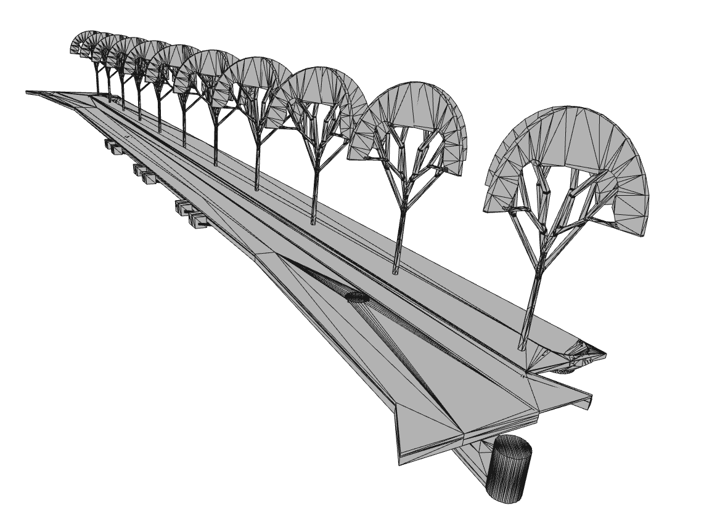
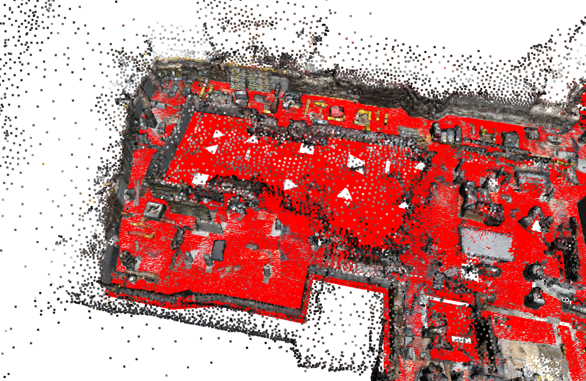

BIMNode
The BIMNode class in Geomapi represents the data and metadata of ifc data. The data itself and methods build upon Open3D TriangleMesh and IFCOPENSHELL concepts while the metadata builds upon the RDFlib framework:
http://www.open3d.org/docs/latest/tutorial/Basic/mesh.html#
https://rdflib.readthedocs.io/
The code below shows how to create a BIMNode from various inputs.
First the geomapi and external packages are imported
#IMPORT PACKAGES
from rdflib import Graph, URIRef, Literal
import open3d as o3d
import os
from pathlib import Path
import ifcopenshell
import ifcopenshell.util.selector
#IMPORT MODULES
from context import geomapi
from geomapi.nodes import *
import geomapi.utils as ut
from geomapi.utils import geometryutils as gmu
import geomapi.tools as tl
Jupyter environment detected. Enabling Open3D WebVisualizer.
[Open3D INFO] WebRTC GUI backend enabled.
[Open3D INFO] WebRTCWindowSystem: HTTP handshake server disabled.
%load_ext autoreload
%autoreload 2
BIMNode from properties
A placeholder BIMNode can be initialised without any data or metadata
node=BIMNode(subject='myNode',
name='myName')
{key:value for key, value in node.__dict__.items() if not key.startswith('__') and not callable(key)}
{'_ifcPath': None,
'_globalId': None,
'_cartesianBounds': None,
'_orientedBounds': None,
'_orientedBoundingBox': None,
'_subject': rdflib.term.URIRef('file:///myNode'),
'_graph': None,
'_graphPath': None,
'_path': None,
'_name': 'myName',
'_timestamp': None,
'_resource': None,
'_cartesianTransform': None}
BIMNode from ifcPath
Instead, it is much more likely to initialise a BIMNode from a path containing an .ifc file. This sets the:
subject
name (name + globalID as some files have overlapping names for different objects)
timestamp
ifcClass
GlobalId (ifc guid)
ifcPath
filePath=os.path.join(Path(os.getcwd()).parents[2],'test','testfiles','IFC','Academiestraat_parking.ifc')
node=BIMNode(ifcPath=filePath)
{key:value for key, value in node.__dict__.items() if not key.startswith('__') and not callable(key)}
{'_ifcPath': 'd:\\Scan-to-BIM repository\\geomapi\\test\\testfiles\\IFC\\Academiestraat_parking.ifc',
'_globalId': '2n_QS$kOz7M9BWCXzp5rs4',
'_cartesianBounds': None,
'_orientedBounds': None,
'_orientedBoundingBox': None,
'_subject': rdflib.term.URIRef('file:///Floor_232_FL_Wide_slab_50mm_974795_2n_QS_kOz7M9BWCXzp5rs4'),
'_graph': None,
'_graphPath': None,
'_path': None,
'_name': 'Floor:232_FL_Wide slab 50mm:974795',
'_timestamp': None,
'_resource': None,
'_cartesianTransform': None,
'className': 'IfcSlab'}
NOTE: GetResource is optional and might slow down any analysis. Only work with data when all metadata options have been exhausted.
NOTE: if no globalId is given, the first .ifcObject is retained
node=BIMNode(ifcPath=filePath, globalId='1K2OFoocT0bub_jVpw2PsR',getResource=True)
{key:value for key, value in node.__dict__.items() if not key.startswith('__') and not callable(key)}
{'_ifcPath': 'd:\\Scan-to-BIM repository\\geomapi\\test\\testfiles\\IFC\\Academiestraat_parking.ifc',
'_globalId': '1K2OFoocT0bub_jVpw2PsR',
'_cartesianBounds': array([-19.38519689, 114.01719939, 45.19729363, 125.59687726,
3.35 , 3.75 ]),
'_orientedBounds': array([[-11.28238184, 37.99919902, 3.35 ],
[116.01357152, 57.68952212, 3.35 ],
[-21.90604793, 106.68012904, 3.35 ],
[-11.28238184, 37.99919902, 3.75 ],
[105.38990543, 126.37045214, 3.75 ],
[-21.90604793, 106.68012904, 3.75 ],
[116.01357152, 57.68952212, 3.75 ],
[105.38990543, 126.37045214, 3.35 ]]),
'_orientedBoundingBox': OrientedBoundingBox: center: (47.0538, 82.1848, 3.55), extent: 128.81, 69.4977, 0.4),
'_subject': rdflib.term.URIRef('file:///Floor_164_FL_Foundation_slab_400mm_C35_45_1276320_1K2OFoocT0bub_jVpw2PsR'),
'_graph': None,
'_graphPath': None,
'_path': None,
'_name': 'Floor:164_FL_Foundation slab 400mm C35/45:1276320',
'_timestamp': None,
'_resource': TriangleMesh with 1576 points and 3636 triangles.,
'_cartesianTransform': array([[ 1. , 0. , 0. , 52.24275107],
[ 0. , 1. , 0. , 85.37826532],
[ 0. , 0. , 1. , 3.55659287],
[ 0. , 0. , 0. , 1. ]]),
'className': 'IfcSlab',
'pointCount': 1576,
'faceCount': 3636}
NOTE: GetMetadata (bool) by default is True. As such, when data is imported, the cartesianBounds, orientedBounds, cartesianTransform and orientedBoundingBox is automatically extracted.
MeshNode from resource
A similar result is achieved by initialising a MeshNode from a Open3D.Geometry.TriangleMesh or IFCOpenShell instance. In this case, GetResource (bool) means nothing.
NOTE: initialising from an .obj or .ply mesh of an ifcElement does not contain any IFC information as those formats do not include such metadata. Initialise from .ifc files whenever possible.
filePath=os.path.join(Path(os.getcwd()).parents[2],'test','testfiles','BIM','System_Panel_Precast_Thinshell_50mm_1677890_3fhPSHjyH7lghMFf1Y5rrB.ply')
mesh=o3d.io.read_triangle_mesh(filePath)
node=BIMNode(resource=mesh)
{key:value for key, value in node.__dict__.items() if not key.startswith('__') and not callable(key)}
{'_ifcPath': None,
'_globalId': None,
'_cartesianBounds': array([ 50.07300091, 50.80691124, 110.31694196, 111.98929461,
0.36 , 2.75 ]),
'_orientedBounds': array([[ 50.11916531, 110.31694196, 0.36 ],
[ 50.11916531, 110.31694196, 2.75 ],
[ 50.80691124, 111.97008919, 0.36 ],
[ 50.07300091, 110.33614737, 0.36 ],
[ 50.76074684, 111.98929461, 2.75 ],
[ 50.76074684, 111.98929461, 0.36 ],
[ 50.07300091, 110.33614737, 2.75 ],
[ 50.80691124, 111.97008919, 2.75 ]]),
'_orientedBoundingBox': OrientedBoundingBox: center: (50.44, 111.153, 1.555), extent: 2.39, 1.7905, 0.05),
'_subject': rdflib.term.URIRef('file:///4de4d5d4-1e34-11ed-9ccc-c8f75043ce59'),
'_graph': None,
'_graphPath': None,
'_path': None,
'_name': '4de4d5d4-1e34-11ed-9ccc-c8f75043ce59',
'_timestamp': None,
'_resource': TriangleMesh with 8 points and 12 triangles.,
'_cartesianTransform': array([[ 1. , 0. , 0. , 50.43995608],
[ 0. , 1. , 0. , 111.15311828],
[ 0. , 0. , 1. , 1.555 ],
[ 0. , 0. , 0. , 1. ]]),
'pointCount': 8,
'faceCount': 12}
NOTE: The cartesianTransform extracted from paths or resources are void of rotationmatrices as this metadata is not part of the fileformat. The translation thus represents the center of the geometry.
ifcPath=os.path.join(Path(os.getcwd()).parents[2],'test','testfiles','IFC','Academiestraat_parking.ifc')
ifc = ifcopenshell.open(ifcPath)
ifcWall=ifc.by_guid('06v1k9ENv8DhGMCvKUuLQV')
bimNode=BIMNode(resource=ifcWall)
{key:value for key, value in node.__dict__.items() if not key.startswith('__') and not callable(key)}
{'_ifcPath': None,
'_globalId': None,
'_cartesianBounds': array([ 50.07300091, 50.80691124, 110.31694196, 111.98929461,
0.36 , 2.75 ]),
'_orientedBounds': array([[ 50.11916531, 110.31694196, 0.36 ],
[ 50.11916531, 110.31694196, 2.75 ],
[ 50.80691124, 111.97008919, 0.36 ],
[ 50.07300091, 110.33614737, 0.36 ],
[ 50.76074684, 111.98929461, 2.75 ],
[ 50.76074684, 111.98929461, 0.36 ],
[ 50.07300091, 110.33614737, 2.75 ],
[ 50.80691124, 111.97008919, 2.75 ]]),
'_orientedBoundingBox': OrientedBoundingBox: center: (50.44, 111.153, 1.555), extent: 2.39, 1.7905, 0.05),
'_subject': rdflib.term.URIRef('file:///4de4d5d4-1e34-11ed-9ccc-c8f75043ce59'),
'_graph': None,
'_graphPath': None,
'_path': None,
'_name': '4de4d5d4-1e34-11ed-9ccc-c8f75043ce59',
'_timestamp': None,
'_resource': TriangleMesh with 8 points and 12 triangles.,
'_cartesianTransform': array([[ 1. , 0. , 0. , 50.43995608],
[ 0. , 1. , 0. , 111.15311828],
[ 0. , 0. , 1. , 1.555 ],
[ 0. , 0. , 0. , 1. ]]),
'pointCount': 8,
'faceCount': 12}
BIMNodes from entire IFC
As one wants to frequently parse entire ifc files, linkeddatatools incorportes the functionality to parse ifc files given a set of classses.
NOTE: By default, all objects in the ifc (.ifcObject) are retained which do not necessarily contains geometry.
NOTE: By default, getResource = True. Turn it off to speed up the process (you can always get the geometry later).
ifcPath=os.path.join(Path(os.getcwd()).parents[2],'test','testfiles','IFC','Academiestraat_building_1.ifc')
ifc = ifcopenshell.open(ifcPath)
bimNodes=[]
for ifcElement in ifcopenshell.util.selector.filter_elements(ifc,"IfcElement"):
bimNodes.append(BIMNode(ifcElement=ifcElement))
print(len(bimNodes))
1192
and now with specific classes…

classes='.ifcWall | .ifcColumn'
bimNodes=tl.ifc_to_nodes(ifcPath, classes=classes,getResource=True)
print(len(bimNodes))
460
BIMNode from Graph and graphPath
If a ifc object was already serialized, a node can be initialised from the graph or graphPath.
NOTE: The graphPath is the more complete option as it is used to absolutize the node’s path information. However, it is also the slower option as the entire graph encapsulation the node is parsed multiple times.
USE: linkeddatatools.graph_to_nodes resolves this issue.
graphPath = os.path.join(Path(os.getcwd()).parents[2],'test','testfiles','bimGraph1.ttl')
graph=Graph().parse(graphPath)
#only print first node
newGraph=Graph()
newGraph=ut.bind_ontologies(newGraph)
newGraph+=graph.triples((URIRef('file:///Basic_Wall_211_WA_Ff1_Glued_brickwork_sandlime_150mm_1118860_0KysUSO6T3_gOJKtAiUE7d'),None,None))
print(newGraph.serialize())
@prefix e57: <http://libe57.org#> .
@prefix ifc: <http://ifcowl.openbimstandards.org/IFC2X3_Final#> .
@prefix v4d: <https://w3id.org/v4d/core#> .
@prefix xsd: <http://www.w3.org/2001/XMLSchema#> .
<file:///Basic_Wall_211_WA_Ff1_Glued_brickwork_sandlime_150mm_1118860_0KysUSO6T3_gOJKtAiUE7d> a v4d:BIMNode ;
ifc:className "IfcWall" ;
ifc:globalId "0KysUSO6T3_gOJKtAiUE7d" ;
ifc:ifcPath "IFC\\Academiestraat_building_1.ifc" ;
ifc:phase "BIM-UF" ;
e57:cartesianBounds """[ 31.3840053 37.25142541 100.31983802 100.57972895 7.49
10.48 ]""" ;
e57:cartesianTransform """[[ 1. 0. 0. 34.91152793]
[ 0. 1. 0. 100.43864519]
[ 0. 0. 1. 9.31833333]
[ 0. 0. 0. 1. ]]""" ;
e57:pointCount 24 ;
v4d:accuracy "0.05"^^xsd:float ;
v4d:faceCount 44 ;
v4d:lod 300 ;
v4d:name "Basic Wall:211_WA_Ff1_Glued brickwork sandlime 150mm:1118860" ;
v4d:orientedBounds """[[ 31.38400511 100.42974533 10.48 ]
[ 37.24861442 100.31982342 10.48 ]
[ 31.38400511 100.42974533 7.49 ]
[ 31.38681629 100.57972895 10.48 ]
[ 37.2514256 100.46980704 7.49 ]
[ 31.38681629 100.57972895 7.49 ]
[ 37.2514256 100.46980704 10.48 ]
[ 37.24861442 100.31982342 7.49 ]]""" ;
v4d:path "BIM\\Basic_Wall_211_WA_Ff1_Glued_brickwork_sandlime_150mm_1118860_0KysUSO6T3_gOJKtAiUE7d.ply" .
node=BIMNode(graphPath=graphPath)
{key:value for key, value in node.__dict__.items() if not key.startswith('__') and not callable(key)}
{'_ifcPath': 'd:\\Scan-to-BIM repository\\geomapi\\test\\testfiles\\IFC\\Academiestraat_building_1.ifc',
'_globalId': '1sAc4Xyq99bfet1lGbGxNb',
'_cartesianBounds': array([-10.82253789, -9.66331336, 72.20498616, 72.63245695,
16.99 , 17.04 ]),
'_orientedBounds': array([[-10.8129766 , 72.63260805, 17.04 ],
[ -9.66325013, 72.60493317, 17.04 ],
[-10.82260366, 72.23266104, 17.04 ],
[-10.8129766 , 72.63260805, 16.99 ],
[ -9.67287719, 72.20498616, 16.99 ],
[-10.82260366, 72.23266104, 16.99 ],
[ -9.66325013, 72.60493317, 16.99 ],
[ -9.67287719, 72.20498616, 17.04 ]]),
'_orientedBoundingBox': None,
'_subject': rdflib.term.URIRef('file:///1faada72-1493-11ed-8ec2-c8f75043ce59'),
'_graph': <Graph identifier=Nb1446c85b0e64370916b01c9da7f5639 (<class 'rdflib.graph.Graph'>)>,
'_graphPath': 'd:\\Scan-to-BIM repository\\geomapi\\test\\testfiles\\bimGraph1.ttl',
'_path': 'd:\\Scan-to-BIM repository\\geomapi\\test\\testfiles\\BIM\\1faada72-1493-11ed-8ec2-c8f75043ce59.ply',
'_name': '1faada72-1493-11ed-8ec2-c8f75043ce59',
'_timestamp': None,
'_resource': None,
'_cartesianTransform': array([[ 1. , 0. , 0. , -10.24292717],
[ 0. , 1. , 0. , 72.41878611],
[ 0. , 0. , 1. , 17.015 ],
[ 0. , 0. , 0. , 1. ]]),
'type': 'https://w3id.org/v4d/core#BIMNode',
'className': 'IfcOpeningElement',
'phase': 'BIM-UF',
'pointCount': 8,
'accuracy': 0.05,
'faceCount': 12,
'lod': 300}
BIMNode save resource
It is interesting to buffer the geometries of ifc files on drive to speed up future analyses. Set save=True on node.to_graph with an optional filepath to store the geometry as .ply or .obj.
ifcPath=os.path.join(Path(os.getcwd()).parents[2],'test','testfiles','IFC','Academiestraat_parking.ifc')
ifc = ifcopenshell.open(ifcPath)
ifcWall=ifc.by_guid('06v1k9ENv8DhGMCvKUuLQV')
bimNode=BIMNode(resource=ifcWall)
bimNode.save_resource(directory=os.path.join(Path(os.getcwd()).parents[2],'test','testfiles','IFC','resources'),
extension='.ply')
True
BIMNode to Graph
The Graph serialisation is inherited from Node functionality.
node=BIMNode(globalId='06v1k9ENv8DhGMCvKUuLQV',
ifcPath=ifcPath,
getResource=True)
newGraphPath = os.path.join(os.getcwd(),'myGraph.ttl')
node.to_graph(newGraphPath)
newNode=Node(graphPath=newGraphPath)
print(node.graph.serialize())
@prefix e57: <http://libe57.org#> .
@prefix ifc: <http://ifcowl.openbimstandards.org/IFC2X3_Final#> .
@prefix v4d: <https://w3id.org/v4d/core#> .
@prefix xsd: <http://www.w3.org/2001/XMLSchema#> .
<file:///Basic_Wall_168_WA_f2_Soilmix_600mm_956569_06v1k9ENv8DhGMCvKUuLQV> a v4d:BIMNode ;
ifc:className "IfcWallStandardCase" ;
ifc:globalId "06v1k9ENv8DhGMCvKUuLQV" ;
ifc:ifcPath "..\\..\\..\\test\\testfiles\\IFC\\Academiestraat_parking.ifc" ;
e57:cartesianBounds """[-19.83659837 -12.40836166 64.55835804 90.40079018 -0.25
6.45 ]""" ;
e57:cartesianTransform """[[ 1. 0. 0. -16.04308554]
[ 0. 1. 0. 77.58409117]
[ 0. 0. 1. 3.325 ]
[ 0. 0. 0. 1. ]]""" ;
e57:pointCount 16 ;
v4d:faceCount 28 ;
v4d:name "Basic Wall:168_WA_f2_Soilmix 600mm:956569" ;
v4d:orientedBounds """[[-19.83941221 90.32921075 6.45 ]
[-12.98842887 64.40506348 6.45 ]
[-19.83941221 90.32921075 -0.25 ]
[-19.25652179 90.48325141 6.45 ]
[-12.40553844 64.55910413 -0.25 ]
[-19.25652179 90.48325141 -0.25 ]
[-12.40553844 64.55910413 6.45 ]
[-12.98842887 64.40506348 -0.25 ]]""" .
BIMNode Analyses
BIMNodes can be attributed with a range of relationships. This is extremely usefull for Graph navigation and linking together different resources. In Semantic Web Technologies, relationships are defined by triples that have other subjects as literals.
In this first example, we determine the percentage of completion on a subselection on an ifc file to asses which objects are built based on point cloud inliers. To this end, we use the v4d.analysesBasedOn relation.
ifcPath=os.path.join(Path(os.getcwd()).parents[2],'test','testfiles','IFC','Academiestraat_parking.ifc')
node1= BIMNode(ifcPath=ifcPath,globalId='1K2OFoocT0bub_jVpw2PsR',getResource=True)
node2= BIMNode(ifcPath=ifcPath,globalId='23JN72MijBOfF91SkLzf3a',getResource=True)
print(node1.resource)
print(node2.resource)
TriangleMesh with 1576 points and 3636 triangles.
TriangleMesh with 8 points and 12 triangles.
graphPath=os.path.join(Path(os.getcwd()).parents[2],'test','testfiles','pcdGraph.ttl')
myNode=PointCloudNode(subject='file:///week22_photogrammetry_-_Cloud',graphPath=graphPath, getResource=True)
print(myNode.resource)
PointCloud with 242750 points.
sources= [node1.resource,node2.resource]
reference=myNode.resource
threshold=0.1
percentages=gmu.determine_percentage_of_coverage(sources=sources, reference=reference)
print(percentages)
[[0.15218456]
[0.70726916]]
These percentages indicate the percentage of the surface area that have points of a reference point cloud/mesh within a threshold Euclidean distance of the surface. It is a measure for the observed/built state of objects.

analysisNode1=BIMNode(subject=node1.subject,
percentageOfCompletion=percentages[0],
isDerivedFromGeometry=myNode.subject,
offsetDistanceCalculation=threshold,
analysisTimestamp=myNode.timestamp)
analysisNode1.to_graph()
print(analysisNode1.graph.serialize())
@prefix omg: <https://w3id.org/omg#> .
@prefix v4d: <https://w3id.org/v4d/core#> .
@prefix xsd: <http://www.w3.org/2001/XMLSchema#> .
<file:///Floor_164_FL_Foundation_slab_400mm_C35_45_1276320_1K2OFoocT0bub_jVpw2PsR> a v4d:BIMNode ;
omg:isDerivedFromGeometry "file:///week22_photogrammetry_-_Cloud" ;
v4d:analysisTimestamp "2022-07-18T15:47:20" ;
v4d:offsetDistanceCalculation "0.1"^^xsd:float ;
v4d:percentageOfCompletion "[0.15218456]" .
These analyses nodes can be stored in seperate graphs and combined at later stages to be used in future analyses.